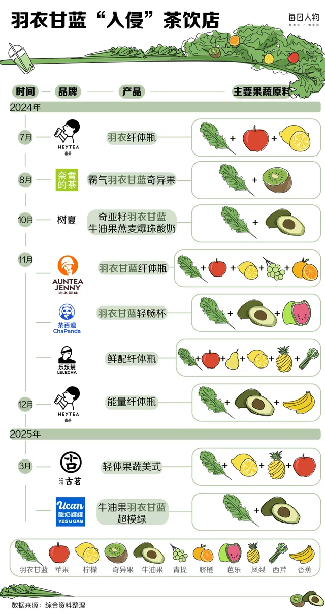

<main class="wrap"><section class="subhero"><p class="eyebrow">栏目</p><h1>现制茶饮</h1><p class="lede">现制茶饮不是传统茶的对立面，而是当代城市生活对茶的一次重新组织。</p></section>
<section class="section-index-blocks">
  <section class="feature-card feature-panel">
    <h2>置顶文章</h2>
    <p>按发布时间排序的最新内容，适合先看最近更新。</p>
    <div class="feature-links">
      <a class="feature-link" href="../../zh/drinks/kale-drinks.html">
  <figure class="feature-link-media"></figure>
  <div class="feature-link-body">
    <span class="feature-chip">最新文章</span>
    <h3>羽衣甘蓝为什么会从“绿化带蔬菜”变成茶饮顶流：小绿水、纤体瓶与健康焦虑生意学</h3>
  </div>
</a>
      <a class="feature-link" href="../../zh/drinks/new-tea.html">
  <figure class="feature-link-media"></figure>
  <div class="feature-link-body">
    <span class="feature-chip">最热文章</span>
    <h3>为什么新式茶饮也在中国茶文化的连续谱里</h3>
  </div>
</a>
    </div>
  </section>
  <section class="feature-card archive-panel">
    <h2>全部文章</h2>
    <p>按时间倒序浏览本栏目全部文章。</p>
    <div class="archive-list"><a class="archive-item" href="../../zh/drinks/kale-drinks.html">
  <span class="archive-item-title">羽衣甘蓝为什么会从“绿化带蔬菜”变成茶饮顶流：小绿水、纤体瓶与健康焦虑生意学</span>
  <span class="archive-item-meta">创建：<time datetime="2026-03-17">2026-03-17</time> · 更新：<time datetime="2026-03-17">2026-03-17</time></span>
</a><a class="archive-item" href="../../zh/drinks/ingredient-list-transparency.html">
  <span class="archive-item-title">为什么“配料表透明、真茶底、少添加”成了茶饮新热点：2026 年现制茶饮信任感之争</span>
  <span class="archive-item-meta">创建：<time datetime="2026-03-17">2026-03-17</time> · 更新：<time datetime="2026-03-17">2026-03-17</time></span>
</a><a class="archive-item" href="../../zh/drinks/low-sugar-tea-drinks.html">
  <span class="archive-item-title">低糖茶饮为什么这么火：当代消费者到底在买“更健康”，还是在买“健康感”？</span>
  <span class="archive-item-meta">创建：<time datetime="2026-03-16">2026-03-16</time> · 更新：<time datetime="2026-03-16">2026-03-16</time></span>
</a><a class="archive-item" href="../../zh/drinks/chagee-rise.html">
  <span class="archive-item-title">霸王茶姬的崛起发展之路：从区域品牌到全国连锁，再到东方茶饮叙事的放大器</span>
  <span class="archive-item-meta">创建：<time datetime="2026-03-16">2026-03-16</time> · 更新：<time datetime="2026-03-16">2026-03-16</time></span>
</a>
      <a class="archive-item" href="../../zh/drinks/modern-tea-brands.html">
  <span class="archive-item-title">现制茶饮为什么会爆火：喜茶、霸王茶姬、茶百道与“星巴克化”的城市日常</span>
  <span class="archive-item-meta">创建：<time datetime="2026-03-16">2026-03-16</time> · 更新：<time datetime="2026-03-16">2026-03-16</time></span>
</a>
      <a class="archive-item" href="../../zh/drinks/new-tea.html">
  <span class="archive-item-title">为什么新式茶饮也在中国茶文化的连续谱里</span>
  <span class="archive-item-meta">创建：<time datetime="2026-03-16">2026-03-16</time> · 更新：<time datetime="2026-03-16">2026-03-16</time></span>
</a>
    </div>
  </section>
</section></main>
